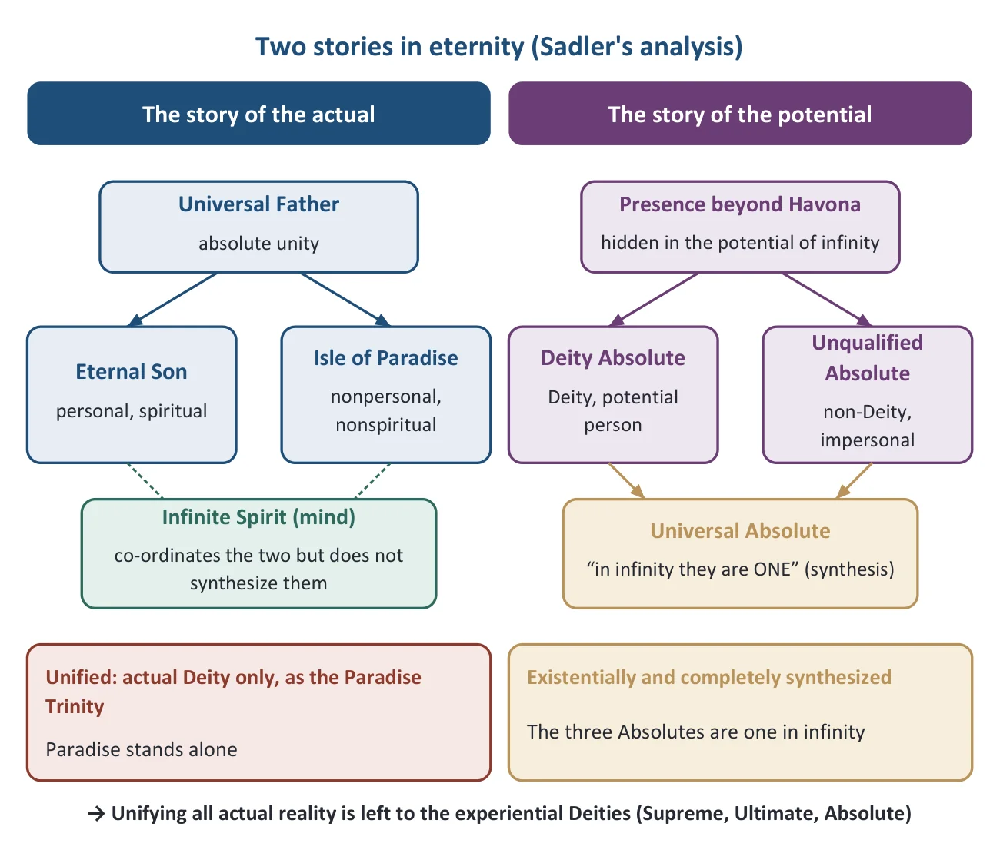

A síntese de poder-personalidade
Original: Apêndice XXII, A síntese de poder-personalidade (pp. 445–474)
NESTE CAPÍTULO
O Livro de Urântia diz repetidamente que as Deidades experienciais “se personalizam em poder”. Sadler trata isso como uma lei básica do crescimento do universo-mestre e analisa-a. A sua resposta é que, na eternidade, Deus não sintetizou numa unidade toda a realidade factual, mas deixou essa tarefa às Deidades experienciais. A síntese ocorre em três níveis, finito, absonito e absoluto; é alcançada nos dois primeiros, mas nunca pode completar-se no nível absoluto.
1. O que significam as palavras: personalidade e poder (orig., pp. 445–447)
A síntese de poder-personalidade é o processo de unir poder e personalidade. Mas o que, exatamente, está sendo unido a quê? Como a revelação dá tanto a “poder” quanto a “personalidade” significados que diferem dos do dicionário, é preciso primeiro esclarecer as palavras.
Sobre a personalidade, o texto oferece descrição, mais do que definição. A personalidade é um mistério não resolvido e uma revelação de Deus; Deus é personalidade e é vontade. Abaixo do nível absoluto, a personalidade é relativamente livre de causação antecedente; não tem identidade própria, mas unifica a identidade de um sistema vivo de energia. Daí Sadler conclui que a personalidade é distinta das três energias do espírito, da mente e da matéria. Essas energias podem expressar-se tanto em qualidade quanto em quantidade, mas a personalidade só pode expressar-se em qualidade.
A analogia de Sadler é a cor vermelha. Ninguém jamais contemplou a vermelhidão isoladamente; o que vemos é sempre uma coisa vermelha. Do mesmo modo, a personalidade nunca aparece isolada; conhecemos sempre alguém. Contudo, assim como a vermelhidão determina por inteiro a cor de um objeto, a personalidade permeia e governa todo o ser em que se encontra.
Sobre o poder, o texto fala em ligação com o Supremo.
Toda a realidade finita no tempo-espaço, sob o impulso diretivo do Ser Supremo em evolução, está empenhada em uma mobilização sempre-ascendente e em uma unificação perfeccionante (na síntese de poder-personalidade) entre todas as fases e valores da realidade finita0:7.10
No domínio físico, “poder do universo” refere-se ao estágio em que a energia passou ao controle inteligente. Sadler supõe que a mente e o espírito têm estágios comparáveis de maturidade, e reserva o sentido mais pleno da palavra poder para as três energias enquanto governadas pelos Criadores Supremos e integradas no Todo-Poderoso. Em suma, a síntese de poder-personalidade significa unir a energia organizada (física, mental e espiritual) à personalidade.
2. Por que a síntese acontece (orig., pp. 447–451)
Em busca de uma resposta, Sadler volta ao passado eterno e põe lado a lado duas narrativas: a história do factual e a história do potencial.
A história do factual
O ponto de partida é a unidade absoluta da natureza de Deus. Quando o Pai se expressou no Filho Original, a Ilha do Paraíso apareceu como uma espécie de contraparte, e a realidade factual dividiu-se no Filho, pessoal e espiritual, e no Paraíso, não pessoal e não espiritual. Mesmo assim, no Paraíso, a energia espiritual e a monota distinguem-se apenas pelo nome; são uma só. Isso é sinal de que as duas eram originalmente uma única realidade.
Surge uma tensão entre a realidade que diverge nessas duas direções, e o Pai e o Filho agem juntos; aparecem o Espírito Infinito e o universo central. O Espírito Infinito é a fonte da mente, e a mente coordena a matéria e o espírito. O que Sadler sublinha é o que não aconteceu nesse ponto. O Agente Conjunto coordena o Filho e o Paraíso, mas não os sintetiza. Em vez de reunir numa só toda a realidade factual, Deus estabelece uma tese de Deidade após outra. O Pai é a tese anterior, o Filho a tese inqualificável, o Espírito a tese conjunta e a Trindade a tese indivisa. Tese se sobrepõe a tese; a tensão não se resolve, antes aumenta. O Paraíso permanece só.
A história do potencial
A narrativa do lado da potencialidade começa do mesmo modo. A presença do Pai além de Havona está oculta nos potenciais da infinitude, mantida do lado da Deidade pelo Absoluto da Deidade e do lado da não Deidade pelo Absoluto Inqualificável, duas expressões exatamente opostas. Mas aqui as histórias se separam. Do lado potencial, os dois estão perfeitamente unificados.
Nos níveis subinfinitos, eles estão funcionalmente diferenciados, mas, na infinitude, eles são UM.0:11.15

A conclusão de Sadler é esta. O que ocorreu do lado factual não foi uma síntese de toda a realidade factual, mas a unificação de toda a realidade factual de Deidade, isto é, a Trindade do Paraíso. A tarefa de unificar a totalidade da realidade factual foi transmitida às Deidades experienciais: Deus, o Supremo, Deus, o Último, e Deus, o Absoluto. Esse é, segundo ele, o pano de fundo eterno do desafio, posterior a Havona, de sintetizar poder e personalidade. A interpretação é uma inferência original de Sadler, tecida a partir de muitas afirmações do texto.
3. O desafio da síntese e os seus três níveis (orig., pp. 452–454)
Segundo Sadler, uma conclusão final da revelação de Deus exigiria que o Absoluto Inqualificável fosse inteiramente materializado numa criação infinita, que o Absoluto da Deidade emergisse plenamente como Deus, o Absoluto, uma “pessoa absoluta experiencial”, e que os dois fossem completamente unificados de modo experiencial. Isso está além do pensamento. Existencialmente, os três Absolutos já são um só no Absoluto Universal, mas realizar essa unidade experiencialmente exigiria outra eternidade.
O que é impossível no nível absoluto é possível nos níveis subabsolutos: primeiro toda a totalidade do finito é personalizada em poder, e depois toda a do absonito. Por que exatamente três níveis? Segundo o texto, a Trindade do Paraíso é factualmente existencial, enquanto os seus potenciais são todos experienciais [0:12.2]. Em relação ao finito, a Trindade funciona como a Trindade da Supremacia; em relação ao absonito, como a Trindade da Ultimidade; e absolutamente, como Deidade Total. Daí haver três Deidades experienciais.
Essas três Deidades experienciais eram potenciais, na Trindade existencial, a Trindade do Paraíso, mas os seus surgimentos no universo, como personalidades de poder, dependem, em parte, dos seus próprios funcionamentos experienciais, nos universos do poder e da personalidade, e, em parte, das realizações experienciais dos Criadores e das Trindades pós-Havona.0:12.4
Sadler vê nisso uma espécie de reação em cadeia. Como as Deidades experienciais estavam latentes na Trindade, elas têm de tornar-se factuais; como as Deidades experienciais evoluem, têm de aparecer Trindades experienciais. Toda a atividade divina no nível finito é personalizada em poder em Deus, o Supremo, e unificada impessoalmente na Trindade Última. Toda a atividade divina no nível absonito é personalizada em poder em Deus, o Último, e unificada impessoalmente na Trindade Absoluta.
4. A síntese no nível finito: o Ser Supremo (orig., pp. 455–461)
Uma síntese sem Trindade
Antes da Supremacia não há nenhuma Trindade experiencial. O próprio Ser Supremo deve ser membro da primeira Trindade experiencial, de modo que essa Trindade não pode tornar-se factual até que o crescimento dele esteja completo. Nem pode a Trindade do Paraíso “unificar-se” de novo para experiencializar o Supremo, pois ela já está, e sempre esteve, absolutamente unificada. O que a Trindade do Paraíso de fato fez foi produzir a pessoa espiritual de Deus, o Supremo, e essa pessoa espiritual torna-se o foco volitivo de toda a unificação finita de poder-personalidade.
O que, então, faz crescer o Supremo? A interação dos três grupos dentro de Deus, o Sétuplo: os Criadores Supremos, o Ser Supremo e as Deidades do Paraíso. Os êxitos que os criadores alcançam no tempo e no espaço são reunidos no poder do Todo-Poderoso, e esse poder une-se à personalidade espiritual em Havona.
A evolução do poder da Supremacia do Todo-Poderoso, por meio de diversas sínteses de divindade, nos universos em evolução, factualizou-se em uma nova presença de poder da Deidade, que se coordenou com a pessoa espiritual do Supremo em Havona, por intermédio da Mente Suprema56:6.2
Sadler observa que essa união ocorre no mundo-piloto do circuito exterior de Havona, e que o seu meio é a Mente Suprema, derivada do Espírito Infinito. Se na eternidade a mente “coordenou” o Filho e o Paraíso, no tempo a mente “sintetiza” poder e personalidade.
Fases que não são nem espirituais nem pessoais
Contudo, Deus, o Sétuplo, não é meramente uma associação. Ele tem também outras fases não relacionadas com o progresso espiritual e pessoal, e cada uma delas deve encontrar unidade no Supremo [106:1.4]. Sadler cita os Sete Mestres Controladores e a “fase mental” de Deus, o Sétuplo, que ele conjecturou no Apêndice XII. A sua imagem é a de muitas correntes que convergem na pessoa espiritual do Supremo: desde os Filhos Criadores, desde os controladores físicos e talvez por um caminho da mente que passa pelos Espíritos Criativos e pelos Espíritos Mestres até Majeston.
O resultado é uma nova relação entre o modelo e a pessoa.
Nas Deidades em evolução, do Supremo e do Último, nós observamos, entretanto, que certas fases impessoais estão sendo factualmente unidas às suas contrapartes volicionais e, desse modo, está evoluindo uma nova relação entre o modelo e a pessoa.118:9.7
A Ilha do Paraíso é o mecanismo absoluto, e o Filho Eterno é a pessoa absoluta. Os dois são coordenados pela mente do Agente Conjunto, mas nunca se tornaram um só. Dentro de uma Deidade experiencial, porém, a matéria, a mente e o espírito estão todos sendo unidos à personalidade. O que não se realizou na eternidade está acontecendo no tempo.
A divergência das energias e a parte do Supremo
Sadler liga essa síntese à “divergência” das três energias. No Paraíso, o espírito e a monota diferem apenas no nome; em Havona são distintos, mas harmoniosos. Nos sete superuniversos abre-se uma ampla separação entre a energia cósmica e o espírito divino [116:6.7]. Essa separação produz incontáveis problemas e desarmonias, e esses problemas tornam-se oportunidades para que criaturas e criadores acumulem experiência de harmonização. Quanto maior o desafio, maior o crescimento.
O Ser Supremo não está apenas do lado receptor desse processo.
Deus, o Supremo, é, por si próprio, um participante volitivo e criativo da sua própria realização na deidade.117:3.7
Ele está agora preenchendo experiencialmente os níveis potencial, associativo e criativo que a Deidade do Paraíso preenche existencialmente.
5. A divindade do Paraíso enriquece a realidade experiencial (orig., pp. 462–465)
Em seguida, consideramos a “pessoa espiritual” que desce do alto. Tanto o Supremo quanto o Último têm uma origem no tempo, e ambos começam como seres espirituais em Havona. Deus, o Supremo, tem origem na Trindade do Paraíso, e também o Último está presente em Havona num sentido absonito e suprapessoal [106:4.3]. Sadler infere que o que a Trindade faz pelo Supremo no nível finito, ela também faz pelo Último no nível absonito. A Trindade é ao mesmo tempo a fonte das duas Deidades experienciais e a realidade de estabilidade absoluta que sustenta a evolução delas.
Sadler vê também o sétuplo não só como uma escada descendente, mas como uma “diversificação lateral”. A Deidade existencial, outrora única, ramifica-se nos Sete Espíritos Mestres (divergência) e depois se reúne de novo no Ser Supremo (convergência) para formar uma nova unidade, uma Deidade experiencial; esse é o princípio de divergência-convergência do Apêndice XIV. Nem o Supremo nem o Último são, portanto, a própria Trindade; cada um é um reflexo da unidade da Trindade no seu próprio nível.
O Supremo é a unificação da Trindade, segundo é compreendida pelos seres finitos; o Último é a unificação da Trindade do Paraíso, segundo é compreendida pelos seres absonitos.0:9.2
Esse enriquecimento não acontece apenas nos níveis da Deidade. A divindade do Paraíso desce, atenuada e diluída, para que possa ser apreendida também nos níveis relativos. As auto-outorgas de um Filho Criador unem experiencialmente criador e criatura, e o Ajustador funde a divindade existencial com a humanidade experiencial. O texto compara a relação do Ajustador com o homem à relação da Trindade com o Supremo.
Os Monitores Misteriosos são para os seres humanos o que a Trindade do Paraíso é para o Ser Supremo.116:3.4
Quando um ser humano se funde com um Ajustador, quando um Filho Criador se torna semelhante às suas próprias criaturas, quando o Supremo e o Último se personalizam em poder, um único princípio está agindo em níveis diferentes. O crescimento espiritual dentro de nós é um pequeno espelho da síntese cósmica de poder-personalidade.
6. A síntese no nível absonito: Deus, o Último (orig., pp. 466–473)
Antes da emergência do Supremo
Antes que a Supremacia emerja, o universo-mestre é governado existencialmente pela Trindade da Ultimidade, enquanto, experiencialmente, a sua supervisão está dividida entre quatro.
1. Dos Absolutos, quanto ao potencial. 2. Do Último, quanto à direção. 3. Do Supremo, para a coordenação evolucionária. 4. Dos Arquitetos do Universo-Mestre, para a administração antes do aparecimento de governantes específicos.12:6.9–12
A Deidade experiencial desse período é “pré-pessoal”, e o Pai, o Filho e o Espírito cooperam com ela não pessoalmente, mas como Trindade [10:7.3]. Enquanto isso, os Arquitetos Mestres, um corpo completo desde o princípio, administram de antemão todo o universo-mestre.
Depois da emergência do Supremo
Uma vez emergido o Ser Supremo, quatro novos fatores entram no nível absonito. Primeiro, a Trindade Última pode tomar forma como realidade factual. Segundo, o Ser Supremo inicia uma terceira fase de função, como Deidade pós-finita, no espaço exterior. Terceiro, o corpo de Criadores Supremos, como Deidade unificada, qualifica-se para ser membro da Trindade Última; o texto compara a factualização do Supremo Todo-Poderoso ao aparecimento do Agente Conjunto na eternidade [116:2.14]. Quarto, as criaturas que tomaram parte no crescimento do Supremo despojam-se dos seus limites finitos e partem para uma nova aventura no nível absonito.
Sadler retoma também a sua conjectura do Apêndice XII de que, no espaço exterior, Deus, o Sétuplo, poderá ampliar-se até Deus, o Décuplo. O texto diz apenas que a função de Deus, o Sétuplo, “provavelmente, ampliar-se-á” em relação ao espaço exterior [0:8.12]. O Deus, o Décuplo, de Sadler inclui novos criadores, como o Trio Criativo Filho-Espírito, o Ser Supremo completado e o Último emergente; ele difere de Deus, o Sétuplo, por se apoiar não apenas na Deidade existencial do Paraíso, mas também na coordenação experiencial que o Ser Supremo terminado proporciona.
O Último e o Supremo encontram-se dentro da Trindade Última, da Trindade Absoluta e de Deus, o Décuplo, e as duas Deidades também formam uma relação direta entre si. Essa relação direta prefigura o Supremo-Último. Sadler considera o Ser Supremo o elo em todas as relações experienciais de Deus, o Último.
A Trindade Última factualiza o Último
Algo inteiramente novo acontece aqui: uma Deidade experiencial personaliza-se em poder porque uma Trindade experiencial se tornou unificada.
Deus, o Último, final e inevitavelmente, adquirirá poder e personalizar-se-á como a Deidade-conseqüência da unificação desta Trindade Última experiencial, na arena em expansão do universo-mestre quase ilimitado.0:12.6
O Supremo cresceu sem uma Trindade experiencial, pela interação de Deus, o Sétuplo. O Último emerge por meio de uma Trindade experiencial. A emergência deles não pode, portanto, seguir o mesmo padrão. Eles têm, no entanto, algo em comum. A poder-personalização do Último também abrange, juntamente com o que é pessoal e espiritual, o que é outro que não pessoal e não espiritual, embora no âmbito muito mais amplo do universo-mestre inteiro. O próprio texto adverte contra tratar os dois como idênticos.
Embora sejam comparáveis, o Último e o Supremo não são idênticos; e o Último não é uma mera amplificação do Supremo.106:8.15

7. A síntese no nível absoluto (orig., pp. 473–474)
Se a conclusão do Supremo eleva as criaturas ao nível absonito, a conclusão do Último abrirá um novo destino além do absonito. Uma vez terminada a poder-personalização do Último, a Trindade Absoluta pode formar-se como realidade factual. Sadler considera, porém, a sua unificação plena altamente duvidosa e talvez impossível.
O âmbito da síntese ampliou-se a cada nível. O Ser Supremo abrange a totalidade do finito no grande universo; o Último abrange todo o potencial absonito do universo-mestre. Se a Trindade Absoluta pudesse ser plenamente unificada, Deus, o Absoluto, seria personalizado em poder a partir do potencial pré-pessoal do Absoluto da Deidade; mas nem mesmo ele poderia ser separado dos valores outros que não pessoais, e esses apontam diretamente para o Absoluto Inqualificável.
E, no nível absoluto, o Absoluto da Deidade e o Absoluto Inqualificável são inseparáveis e indistinguíveis, em presença do Absoluto Universal.106:5.2
A síntese final de poder-personalidade é, portanto, uma tentativa de alcançar experiencialmente a unidade dos Absolutos que já existe existencialmente na eternidade. É uma tarefa sem fim, sem limite e sem exterior. Para extrair toda a infinitude, seria preciso chegar ao fim da eternidade, e a eternidade é tão sem fim quanto a infinitude. Sadler pergunta se a própria noção de um “fim” não será um hábito de pensamento preso ao tempo e ao espaço. Nem mesmo a Trindade do Paraíso pode experiencializar o Absoluto da Deidade, porque, embora infinita, não é uma Trindade experiencial.
A onipotência da Deidade não implica o poder de fazer o não-factível.118:5.1
Sadler e o texto
Algumas das referências de Sadler contêm erros de numeração. O “103:8.10” que ele cita para outro aspecto da Trindade Última deveria ser 106:8.10; o “112:8.14” dado para a relação das três energias é, a julgar pela página, 12:8.14; e o “110:1.5” citado para a fase mental do Supremo é 116:1.5. Além disso, o contraste em que o lado factual se detém na coordenação enquanto o lado potencial é sintetizado, a “fase mental” de Deus, o Sétuplo, e Deus, o Décuplo, são todos interpretações de Sadler, reunidas a partir de muitas passagens. O que o próprio texto diz vai apenas até isto: as Deidades experienciais personalizam-se em poder e, nesse processo, fases impessoais estão sendo unificadas.
Pontos-chave
- A síntese de poder-personalidade é o processo de unir a energia organizada (física, mental e espiritual) à personalidade; é o princípio pelo qual as Deidades experienciais crescem.
- Na eternidade, o lado potencial foi sintetizado no Absoluto Universal, enquanto o lado factual não foi além da coordenação da mente. Sadler interpreta a unificação de toda a realidade factual como uma tarefa deixada às Deidades experienciais.
- O Supremo cresce sem uma Trindade experiencial, pela interação de Deus, o Sétuplo, à medida que o poder todo-poderoso e a personalidade espiritual se unem por meio da Mente Suprema.
- Dentro de uma Deidade experiencial, até as fases impessoais estão sendo unificadas com a personalidade, dando origem a uma “nova relação entre o modelo e a pessoa”.
- O Último personaliza-se em poder uma vez unificada a Trindade Última, e não é uma mera amplificação do Supremo.
- A síntese no nível absoluto é a tarefa sem fim de alcançar experiencialmente uma unidade que já existe existencialmente.